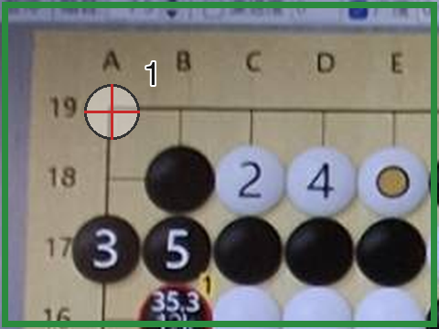
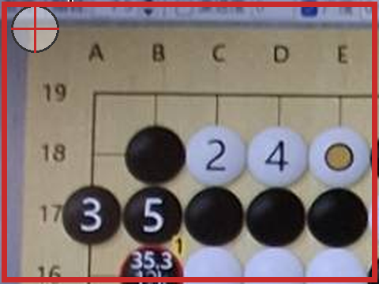

圍棋棋盤圖片 → 棋譜圖
上傳棋盤截圖，自動辨識盤面，產生清晰的 SVG 棋譜圖。App 截圖效果最佳；實體棋盤照片為實驗性支援。
要辨識螢幕上的棋盤？請直接截圖，再使用自動辨識；效果會比拍攝螢幕好很多。
要辨識螢幕上的棋盤？請直接截圖，再使用自動辨識；效果會比拍攝螢幕好很多。
技術詳情
照片模式（實驗性）
請依序把 1–4 號控制點放到棋盤四個角
（1 左上 → 2 右上 → 3 右下 → 4 左下）。
把控制點放在最外圈格線的交叉點上 — 左上角＝最上方橫線與最左方直線的交點。
不要放在木框邊緣、視窗外框或座標數字上。
照片模式只辨識棋子（實體棋盤沒有手數與記號）。


要辨識螢幕上的棋盤？請直接截圖，再使用自動辨識；效果會比拍攝螢幕好很多。
確認格線
下圖是系統實際辨識用的拉正棋盤，紅線是它認定的格線。 請確認紅線是否落在棋盤的格線上、交叉點是否對準棋子中心。
辨識結果
沒有圈記的點也可能有誤 — 請整體對照原圖。
請人工確認
技術訊息（原文）
直行由 A 起算（略過 I），橫列由下往上數。
修正辨識結果（編輯 JSON 後重新產生）
若辨識有誤（例如手數讀錯、棋子顏色錯誤），可直接修改下方 JSON —
棋子座標格式如 "D14"（直行由 A 起算、略過 I，橫列由下往上數）— 然後按「套用修正並重新產生」。
編輯 JSON 期間，上方棋盤的點按修正會暫停，套用成功後恢復。